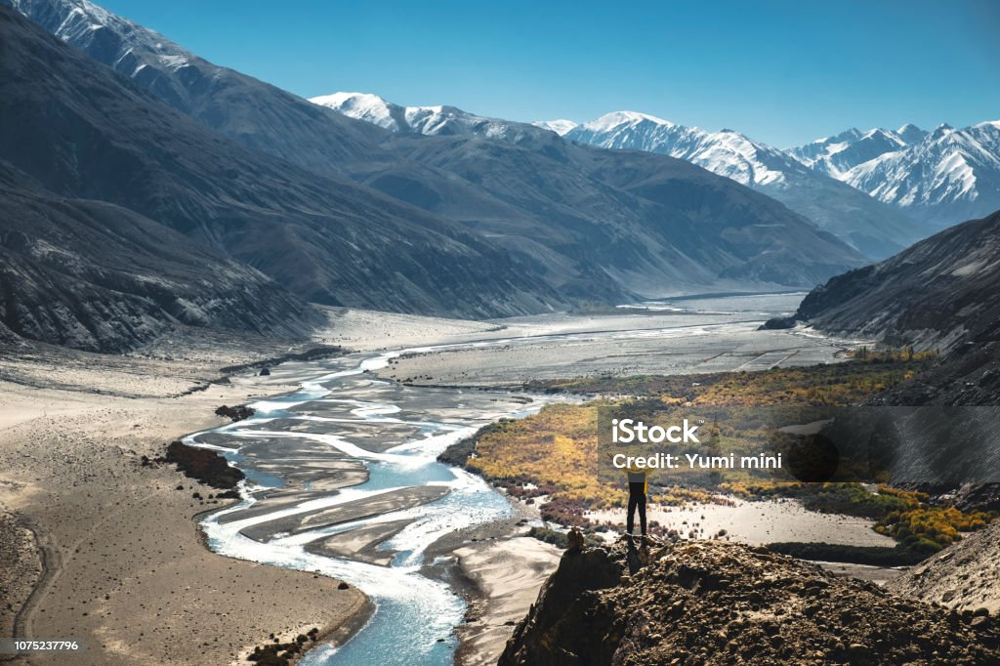
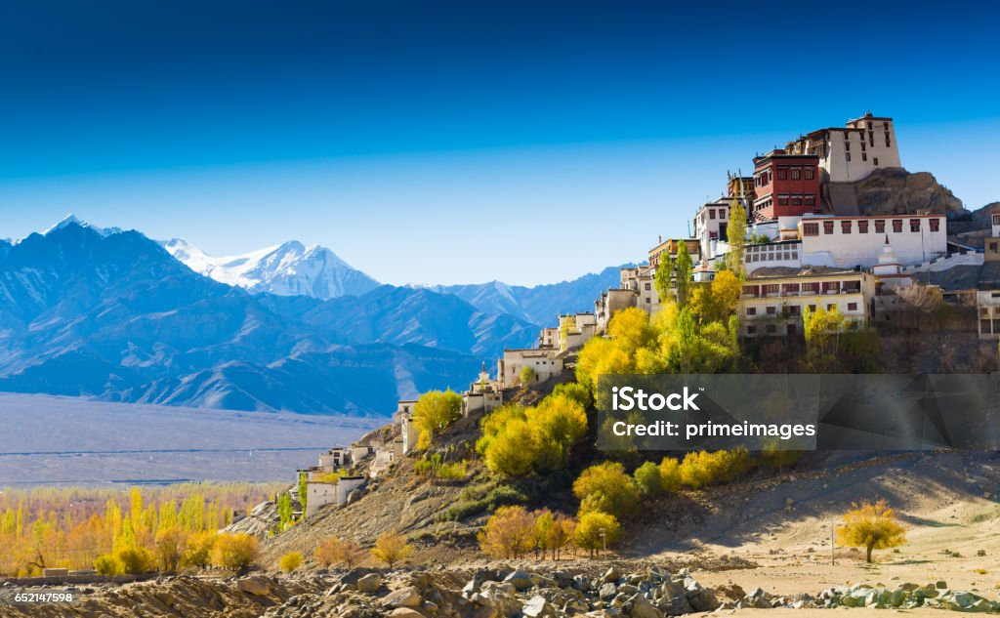

Ladakh is a Union Territory in northern India, known for its remote mountain scenery and Tibetan culture:
Ladakh is located between the Karakoram mountain range in the north and the Himalayas in the south. The main city, Leh, is situated at 3,500 meters above sea level.
The name Ladakh means "land of high passes".
The region is inhabited by Tibetan people and a small Indo-Aryan population. The predominant language is Ladakhi, a Tibetic language.
Ladakh is a cold desert.
Ladakh is one of the highest regions in the world, with high plains, deep valleys, lakes, rivers, and mountain passes.
Ladakh is home to the world's highest bridge, the Bailey Bridge, which was built in 1982 by the Indian Army. It is also home to the Siachin Glacier, the world's highest battlefield.
Ladakh is sometimes called "Little Tibet" because of its Tibetan cultural influences. It is also home to the rare twin-humped Bactrian camel.
Ladakh is a region administered by India as a union territory and constitutes an eastern portion of the larger Kashmir region that has been the subject of a dispute between India and Pakistan since 1947 and India and China since 1959.[2] Ladakh is bordered by the Tibet Autonomous Region to the east, the Indian state of Himachal Pradesh to the south, both the Indian-administered union territory of Jammu and Kashmir and the Pakistan-administered Gilgit-Baltistan to the west, and the southwest corner of Xinjiang across the Karakoram Pass in the far north. It extends from the Siachen Glacier in the Karakoram range to the north to the main Great Himalayas to the south.[11][12] The eastern end, consisting of the uninhabited Aksai Chin plains, is claimed by the Indian Government as part of Ladakh, but has been under Chinese control.
